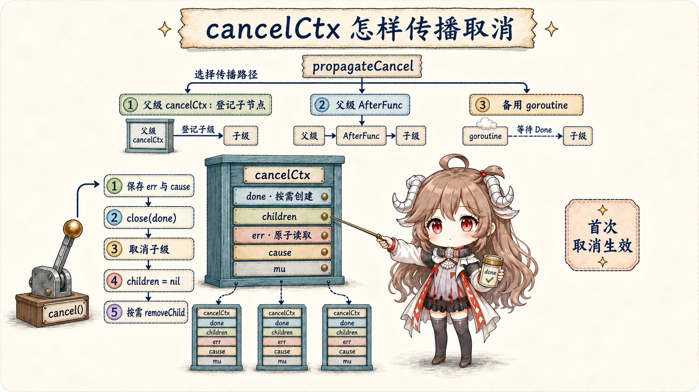
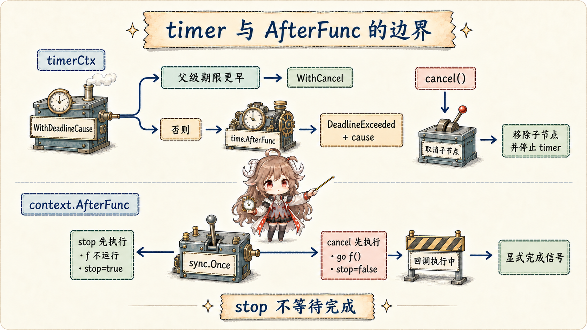
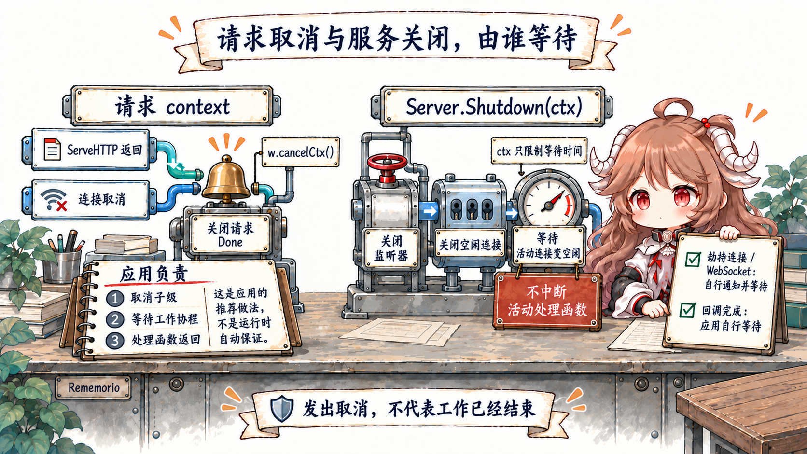

阅读契约：先记住一句话：cancel() 只是发出“请停止”的信号，不会瞬间杀死 goroutine，也不会替你等待它结束。读完前半篇，你应能把结束过程分成发信号、worker 观察并返回、清理资源、等待全部结束四步。
前半篇先讲调用者必须遵守的结束协议；传播细节再固定到 Go 1.26.0 tag 的 context/context.go 和 net/http/server.go；API 契约来自 context 文档 与 Server.Shutdown 文档。 字段布局、fallback goroutine 与 Shutdown 的 polling 是当前实现；取消传播、Done/Cause/Err 与 Shutdown 公共语义才是调用者契约。
一、按下取消键后，程序还要做三件事
想象 fetchd 同时抓取两个网站，1.5 秒 deadline 到了。context 会关闭 Done()，像广播室亮起“停止”灯；
但两个 worker 可能正在计算、等待网络，或者准备把结果发进 channel。它们必须在自己的阻塞点或 select 里看见这盏灯，然后主动返回。
worker 返回前还可能要关闭 response body、停止 timer 或释放临时资源。最后，创建这些 worker 的 handler 还要确认它们都已退出，才能安全结束。 所以完整顺序不是“cancel = done”，而是发信号 → 各自停止 → 各自清理 → 创建者等待。
| 阶段 | 谁负责 | 完成信号 | 常见误读 |
|---|---|---|---|
| 发布取消 | parent、deadline 或显式 cancel | Done() closed | 以为 worker 已停止 |
| 观察并退出工作 | 每个 worker / blocking API | 函数返回或 goroutine done | 只在循环外检查一次 ctx |
| cleanup | 资源拥有者 | Body/Conn/timer/临时资源关闭 | 把 cleanup 交给 cancel 自动完成 |
| join | 创建 goroutine 的 owner | WaitGroup、errgroup 或 done channel | 把 cancel() 当成 Wait |
表格把这四步对应到具体负责人。context 是控制面，不是任务管理器。它用一个只读 channel 广播“不要再开始/继续无意义工作”，却不知道 goroutine 在做什么，也没有 goroutine handle 可以等待。
谁创建 goroutine，谁就必须同时设计它的停止点与 join 点。fetchd 的 handler 若提前返回，而 worker 仍尝试向无人接收的结果 channel 发送，泄漏仍会发生；第四篇用有界 buffer 解决了一种形状，但通用答案仍是取消 + 可退出 send + join。
二、Context 是树状查询接口，不是数据背包
Context 只有 Deadline、Done、Err 与 Value 四个方法。derived context 指向 parent，取消沿树向下传播；Value 沿 parent 向上查找。
文档要求不要把 Context 存进 struct，不要传 nil，也不要用 Value 代替普通参数。Value 只适合跨 API 的 request-scoped 数据，例如 trace ID，而不是 timeout、logger 配置或可选开关的万能容器。
type Context interface {
Deadline() (deadline time.Time, ok bool)
Done() <-chan struct{}
Err() error
Value(key any) any
}
关闭 channel 是广播：任意数量 waiter 都能观察同一个事件；也因为只是关闭，没有把具体错误塞进 channel，所以接收者再调用 Err() 或 Cause() 取原因。
Done() 允许返回 nil，表示永不取消；把 nil channel 放进 select 会永久禁用该 case，这正是 Background/TODO 与 WithoutCancel 的行为边界。
三、cancelCtx 把发布与子树管理放在一起
cancelCtx 嵌入 parent Context。done 用 atomic.Value 延迟创建 channel；从未调用 Done 的 context 无需分配 channel。err 也用 atomic load 服务高频检查，children map 与 cause 由 mutex 保护。
Err() 读到非 nil error 后还会接收一次 Done，确保调用者观察错误时 channel 已经关闭。
type cancelCtx struct {
Context
mu sync.Mutex
done atomic.Value
children map[canceler]struct{}
err atomic.Value
cause error
}3.1 propagateCancel 有三条传播路
建立 child 时先检查 parent.Done。parent 永不取消就无需注册；parent 已取消则同步取消 child。最常见的 parent 是标准库 *cancelCtx 或可追溯到它的派生类型，child 直接登记到 parent.children，取消时递归调用。
若 parent 提供 AfterFunc，child 注册回调并用 stopCtx 保存注销函数；只有无法识别的自定义 Context 才启一个 fallback goroutine，在 parent.Done 与 child.Done 之间 select。

if p, ok := parentCancelCtx(parent); ok {
p.mu.Lock()
if p.children == nil {
p.children = make(map[canceler]struct{})
}
p.children[child] = struct{}{}
p.mu.Unlock()
return
}
if a, ok := parent.(afterFuncer); ok {
c.mu.Lock()
stop := a.AfterFunc(func() {
child.cancel(false, parent.Err(), Cause(parent))
})
c.Context = stopCtx{Context: parent, stop: stop}
c.mu.Unlock()
return
}
go func() {
select {
case <-parent.Done():
child.cancel(false, parent.Err(), Cause(parent))
case <-child.Done():
}
}()
调用返回的 CancelFunc 不只是提前关 Done。它还把 child 从 parent.children 删除，或注销 parent AfterFunc；deadline context 还会停止 timer。忘记调用 cancel，child 可能一直被 parent 引用到 parent 自己取消。
因此 ctx, cancel := context.WithTimeout(...); defer cancel() 的价值包括释放树节点和 timer，不只是“保险地再取消一次”。
3.2 第一次取消决定当前节点的 Err 与 cause
cancelCtx.cancel 在锁内检查 err：已设置就立即返回，所以每个节点 first cancel wins。第一次取消先保存 err/cause，再关闭或发布共享 closed channel，随后递归取消所有 children 并清空 map。
parent 先取消时，child 继承 parent cause；child 先以本地 cause 取消，则 child 保留本地原因，后来 parent 的原因不会覆盖它。
parent, cancelParent := context.WithCancelCause(context.Background())
child, cancelChild := context.WithCancelCause(parent)
cancelChild(errWorker)
cancelParent(errClient)
context.Cause(parent) // errClient
context.Cause(child) // errWorker
ctx.Err() 故意保持小而稳定，只返回 context.Canceled 或 context.DeadlineExceeded；Cause(ctx) 才携带领域原因。
生产日志和 response mapping 可以同时记录两者：Err 用于分类生命周期，Cause 用于解释“客户端断开”“上游预算耗尽”或“worker 校验失败”。不要把敏感 payload 塞进 cause 后无差别回传给客户端。
3.3 timerCtx 把 deadline 变成一次取消
WithDeadlineCause 先比较 parent deadline：父级更早时直接返回一个 WithCancel child，不再加更晚的 timer。否则创建 timerCtx，登记到父树，并用 time.AfterFunc 在到期时以 DeadlineExceeded 和指定 cause 取消。
手动 cancel 会先走 cancelCtx，再 removeChild、停止并清空 timer。
type timerCtx struct {
cancelCtx
timer *time.Timer
deadline time.Time
}
func (c *timerCtx) cancel(removeFromParent bool, err, cause error) {
c.cancelCtx.cancel(false, err, cause)
if removeFromParent { removeChild(c.cancelCtx.Context, c) }
c.mu.Lock()
if c.timer != nil { c.timer.Stop(); c.timer = nil }
c.mu.Unlock()
}3.4 AfterFunc 的 stop 只赢得“是否开始”竞争
context.AfterFunc(ctx, f) 用内嵌 cancelCtx 订阅 parent，并用一个 sync.Once 在“stop 阻止执行”和“cancel 启动 go f()”之间裁决。
stop 返回 true 表示它阻止了 f 开始；返回 false 表示 f 已开始，或之前已 stop。最容易漏掉的一句 API 文档是：stop 不等待 f 完成。

stop := context.AfterFunc(ctx, func() {
close(started)
cleanup()
close(done)
})
if !stop() {
<-done // 需要完成语义时，自己 join
}
同一个 Context 上的多个 AfterFunc 彼此独立，也没有执行顺序保证。f 运行在自己的 goroutine，若它会拿锁，注册方不能持着同一把锁等待 done，否则很容易自锁。
适合场景是唤醒被 sync.Cond 或系统调用包裹的等待、触发轻量 cleanup；复杂生命周期仍应由拥有者 goroutine 和明确 join 管理。
3.5 WithoutCancel 切断控制面，也切断 deadline
context.WithoutCancel(parent) 仍向 parent 查询 Value，却让 Deadline 返回 none、Done 返回 nil、Err 与 Cause 返回 nil。它不是“忽略这一次 cancel”，而是完整切断父取消与 deadline。
适合 request 返回后仍需短暂完成的审计/投递，但必须立刻在外层套新的有界 timeout，并由进程级 owner join；否则 request leak 会变成 process leak。
detached := context.WithoutCancel(r.Context())
auditCtx, cancel := context.WithTimeout(detached, 2*time.Second)
defer cancel()
return writeAudit(auditCtx, event)四、HTTP request context 的关闭点
HTTP/1 server 在 connection 上先创建 connection context；每次 readRequest 再 context.WithCancel(ctx)，把 cancel func 存进 response。文档保证 incoming request 的 context 在客户端连接关闭、HTTP/2 request 被取消或 ServeHTTP 返回时取消。
HTTP/1 实现中 handler 返回后立刻调用 w.cancelCtx()；connection reader 检测读错误时也会取消 connection context，从而向当前 request 传播。
ctx, cancelCtx := context.WithCancel(ctx)
req.ctx = ctx
w = &response{cancelCtx: cancelCtx, req: req, /* ... */}
serverHandler{c.server}.ServeHTTP(w, w.req)
w.cancelCtx()所以 handler 内创建的 worker 不应把 request context 保存到返回之后继续无限使用。handler 应先停止接收新工作，取消 child，等待 worker/errgroup，最后再 return；return 触发的 request cancel 是兜底，不是 owner 的 join 协议。 反过来，客户端断开可提前关闭 Done，但网络栈何时观察断开受协议与 I/O 状态影响，不能把它当毫秒级心跳。
4.1 Server.Shutdown 等 active，不中断 active
Shutdown 先标记 inShutdown、关闭 listener，让 Serve 返回 ErrServerClosed；并发启动 RegisterOnShutdown callbacks，等待 listener goroutine；随后关闭 idle connections，并以 1ms 起步、指数退避到最多 500ms 的 timer 轮询 active connections，直到它们回到 idle。
传入 Shutdown 的 context 只限制“等多久”，并不会成为每个 active request 的 parent，也不会自动取消 handler。

func (s *Server) Shutdown(ctx context.Context) error {
s.inShutdown.Store(true)
s.mu.Lock()
lnerr := s.closeListenersLocked()
for _, f := range s.onShutdown { go f() }
s.mu.Unlock()
s.listenerGroup.Wait()
timer := time.NewTimer(nextPollInterval())
defer timer.Stop()
for {
if s.closeIdleConns() { return lnerr }
select {
case <-ctx.Done(): return ctx.Err()
case <-timer.C: timer.Reset(nextPollInterval())
}
}
}
hijacked connection（包括常见 WebSocket 路径）不在 Shutdown 的关闭或等待范围。RegisterOnShutdown 只负责启动协议专用通知，callback 本身也是 goroutine，Shutdown 不等它结束；应用必须维护这些 connection/session 的 registry，并做自己的 broadcast + join。
main goroutine 也必须等待 Shutdown 返回，不能在 ListenAndServe 刚返回 ErrServerClosed 时直接退出进程。
五、实验把 signal、stop 与 join 分开
context_lab_test.go
用 testing/synctest 确定性证明 cancel 返回时 worker 仍可卡在 cleanup；释放 cleanup 并 Wait 后才完成。另一个测试让 AfterFunc callback 已启动但受 channel 阻塞，此时 stop 返回 false 且立即返回，显式 done 才代表完成。
cancel()
synctest.Wait()
select {
case <-workerDone:
t.Fatal("cancel unexpectedly joined worker")
default:
}
close(cleanupRelease)
synctest.Wait()
<-workerDone集成测试用一个会通知 Close 的 listener 精确知道 Shutdown 已关闭监听器；在 handler release channel 仍关闭前，Shutdown 必须未返回；释放 handler 后，request、Shutdown 与 Serve 分别以成功、nil 与 ErrServerClosed 结束。 测试不依赖“睡 50ms 看看”，2 秒 timer 只作为失败保险。
cd go-runtime/examples/fetchd
go test -run 'Test(Cancel|Timeout|AfterFunc|ServerShutdown)' -count=20
go test ./...
go test -race ./...
go vet ./...六、回到 fetchd 的结束清单
- 入口接受 ctx，出口不保存 ctx。Context 是调用链生命周期，不是可长期缓存的依赖。
- 创建 goroutine 同时创建 join。优先 errgroup/WaitGroup；只 cancel 没有完成语义。
- 所有可能阻塞点都能观察取消。网络 API 传 ctx，channel send/receive 用 select，循环定期检查。
- 永远调用 CancelFunc。即使 parent 稍后会取消，也要及时 removeChild、stop timer。
- Err 分类，Cause 解释。first cause 是诊断证据，但不要泄漏敏感数据。
- AfterFunc callback 有自己的完成信号。stop=false 之后需要等待就显式 join。
- WithoutCancel 后重新加预算。detached 工作必须受 process lifetime 管理。
- Shutdown 顺序是停止入口、通知后台、等待 active、最后退出。WebSocket/hijacked 自己维护 registry 与 join。
可复用结论是：context 解决的是取消状态与原因传播；正确结束还需要每个 owner 完成 cleanup，并用独立的 join 证明 goroutine 已退出。 下一篇会继续追问这些 worker 和 request 对象去了哪里：从逃逸分析、size class 与 mcache 读到 GC mark assist、write barrier 和可观测的 allocation pressure。
参考源码与文档
- context package documentation
- Go Concurrency Patterns: Context
- WithCancelCause, Cause, and AfterFunc
- cancelCtx parent detection, propagation, and cancellation
- WithoutCancel
- timerCtx and timeout causes
- http.Request.Context
- HTTP request context construction
- connection and request cancellation
- Server.Shutdown and idle-connection polling
- fetchd context lifecycle lab